Prokaryotic and Eukaryotic Cells
Cell Discovery and Theory · the two basic cell types
Meet your UAE Values Team
Five friends will coach you through today's cell mission. Tap a character to discover their job today!
Lesson map · 45 minutes · tap any activity
Objectives, success criteria & key words
Distinguish between prokaryotic and eukaryotic cells.
- Foundation: I can state the features that all cells share and name examples of prokaryotes and eukaryotes.
- Secure: I can compare prokaryotic and eukaryotic cells using a Venn diagram.
- Advanced: I can explain the endosymbiotic theory and how it led to cell diversity.
Starter + attendance on the LMS
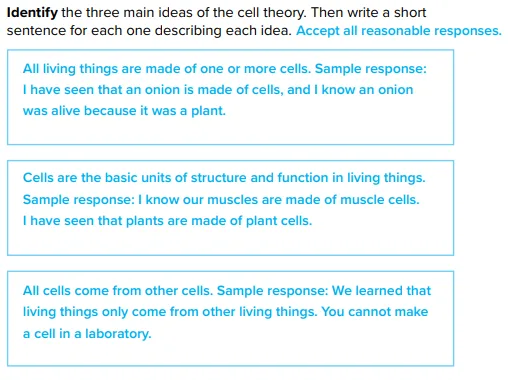
- Mark your attendance on the LMS and settle in your seat.
- Recall: write the three ideas of the cell theory, with one sentence of evidence for each.
- Try the starter games: Prokaryotic or eukaryotic? (Wordwall), Cell types worksheet and Prokaryotes and eukaryotes activity.
- Then answer the true/false questions on the next slide on your own.
Pre-assessment: what do you already know?
Hook: three cells, one microscope
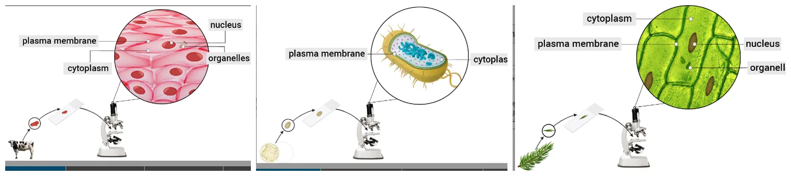
In a hospital lab in Hatta…
Dr. Shamma places three samples under the microscope: an animal cell, a bacterium and a plant cell.
The mystery: what features do these cells have in common? What are the differences? And why is the bacterium put in a completely different group?
2. Which label is missing from the bacterium?
3. Which cell looks the simplest?
Video: prokaryotic and eukaryotic cells (narrated, subtitles)
Activity 1: prokaryote or eukaryote?
Does each feature describe a PROKARYOTIC cell or a EUKARYOTIC cell? Tap to choose, then check.
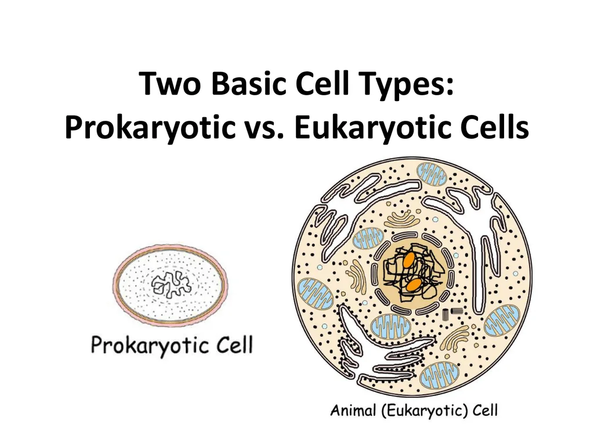
Activity 2: tent or villa? (the unconventional version)
A prokaryote is like a desert tent: one open space where cooking, sleeping and storing all happen together. A eukaryote is like a villa: a majlis (the nucleus, where the important plans are kept) and many rooms, each with its own walls and job (the organelles).
Prokaryotic cells do not have a nucleus or other membrane-bound organelles. Eukaryotic cells contain a nucleus and other organelles: specialized structures that carry out specific cell functions.
Textbook: what do all cells share?
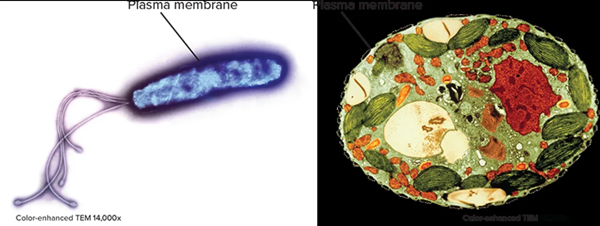
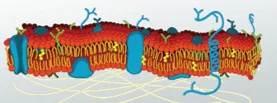
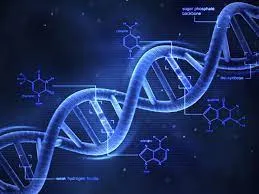
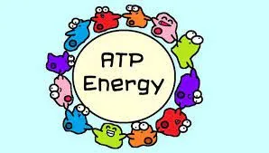
Keywords: prokaryotes and eukaryotes
⛺ PROKARYOTES
- Pro = before · Kary = the nucleus
- Organisms without a true nucleus in their cells
- Found in bacteria
- Unicellular organisms
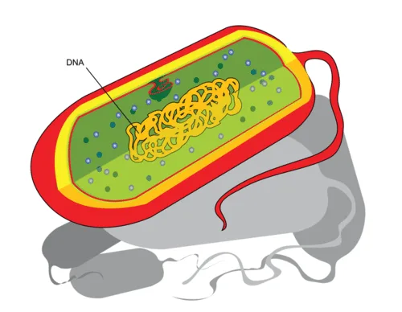
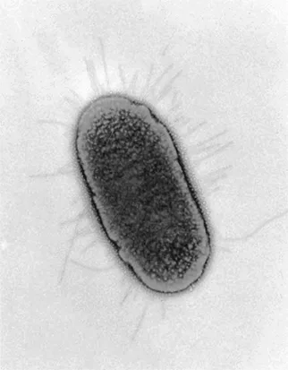
🏠 EUKARYOTES
- Eu = true · Kary = the nucleus
- Organisms with a true nucleus in their cells
- Found in animals, plants, fungi and yeast
- Unicellular or multicellular organisms
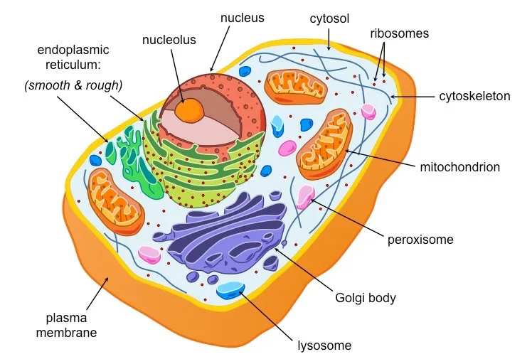
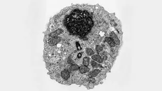
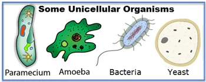
Two basic cell types: prokaryotic vs eukaryotic
Simulation: cell explorer
Simulation: mystery cell classifier
A mystery cell appears under the microscope. Look for a nucleus and organelles, then classify it. Can you score 8 in a row?
Simulation: origin of cell diversity (endosymbiosis)
- Eukaryotic cells may have evolved from prokaryotic cells.
- The endosymbiotic theory proposes that a symbiotic relationship formed between two prokaryotic cells, one of which lived inside the other.
- Eventually the symbiotic relationship led to the two cells becoming one.
- Because eukaryotic cells are larger and more complex, they developed specific functions. These led to cell diversity, and thus organismal diversity.
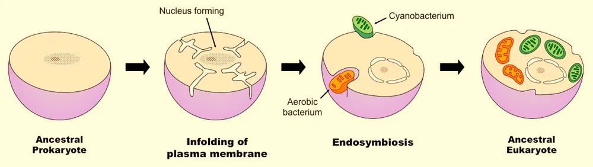
Lab: cheek cells vs yoghurt (laban) bacteria
- Gently rub the swab inside your cheek and smear it on slide 1.
- Smear a tiny drop of yoghurt on slide 2.
- Add one drop of methylene blue to each, then a cover slip.
- Observe at 100×, then 400×. Record what you see.
| Feature | Cheek cells | Yoghurt bacteria |
|---|---|---|
| Nucleus visible? | yes, a dark blue dot | no |
| Size | large, flat cells | tiny rods and dots |
| Cell type | eukaryotic | prokaryotic |
Formative check
Tap an answer. Wrong? Read the hint and try again!
Order the steps: how eukaryotic cells may have formed
Put the endosymbiotic theory in order. Tap the steps from first to last. Tap a numbered one to undo.
Cell types worksheet (1/2)
B. Cell with no nucleus
C. Controls what enters and leaves the cell
D. Cell with a true nucleus
E. Organism made of one cell
Cell types worksheet (2/2)
| Phrase | Where does it go? |
|---|---|
| bacteria | |
| have a plasma membrane | |
| have a nucleus | |
| do not have membrane-bound organelles | |
| multicellular organisms | |
| unicellular organisms |
Explain how eukaryotic cells may have evolved from prokaryotic cells.
✓ One prokaryotic cell lived inside another (a symbiotic relationship).
✓ Over time the two cells became one; the smaller cell became an organelle such as a mitochondrion.
✓ Larger, more complex eukaryotic cells developed specific functions, leading to cell diversity.
Differentiated tasks: choose your level
Foundation ★
- Name four structures found in all cells.
- Give one example of a prokaryote and two of eukaryotes.
1. Plasma membrane, cytoplasm, ribosomes, DNA.
2. Bacteria; e.g. animals, plants, fungi, yeast.
Secure ★★
- Give three differences between prokaryotic and eukaryotic cells.
- Why is yeast a eukaryote even though it has one cell?
1. Eukaryotes have a nucleus, membrane-bound organelles and linear chromosomes, and are larger and more complex.
2. Yeast cells have a true nucleus.
Advanced ★★★
- Explain the endosymbiotic theory.
- Why were the first organisms on Earth probably prokaryotes?
1. One prokaryote lived inside another; they became one cell, and the smaller one became an organelle.
2. Prokaryotes are the oldest, smallest and simplest cell type; eukaryotes probably evolved from them.
Summative assessment: Cell Classifier quiz
Exit ticket: solve the three-cell mystery
All three cells share a plasma membrane, cytoplasm, ribosomes and DNA. But the bacterium has no nucleus and no membrane-bound organelles, so it is PROKARYOTIC. The animal and plant cells have a nucleus and organelles, so they are EUKARYOTIC.
Foundation: I can state the features all cells share and name examples of each type.
Secure: I can compare prokaryotic and eukaryotic cells using a Venn diagram.
Advanced: I can explain the endosymbiotic theory.
I can decode the words prokaryotic and eukaryotic.
Which value did you show today?
Tap the character whose value you showed in this lesson. Then tell your partner one real example!
Simple or complex, every cell counts
Two small cells once worked together and became something greater. When we cooperate, we grow too. Keep exploring, the next discovery could be yours!